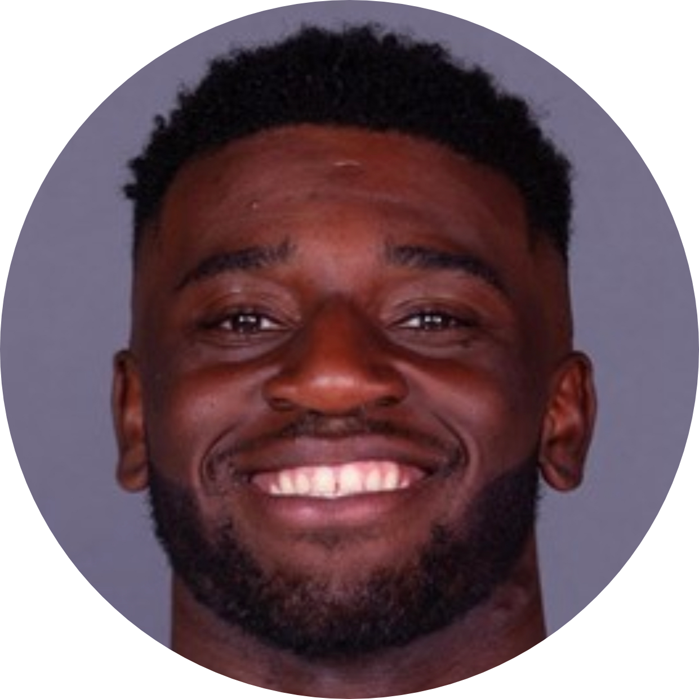

|  |
Alex TchouangwaInteractive ResumeMajored in Computer Science + Business @ Colorado School of Mines Freelance Web & Mobile App Developer I am an iOS and Web Developer with a passion in excellence. With my school courseload and my outside interest I have developed a strong skillset in web development, digital marketing and social media marketing, I believe with my unique skillset I can provide clients with perspective and insight that will benefit tremendously to the success of their business. "Never be limited by other people's limited imaginations." - Dr. Mae Jemison |
Colorado School of Mines | Golden, Co
Bachelor of Science in Computer Science + Business | August 2017 - May 2020
My time at Mines was unique as apart of the Varsity Football Team while also being a Senator and the Pre-Collegiate Initiative Chair for the National Society of Black Engineers (NSBE). I was also a member of the American Society of Engineering Management (ASEM) and the Association of Computing Machinery (ACM).
Obra D. Tompkins High School | Katy, Texas
High School Dipolma | Graduated May 2017 with Honors
I was a 3 sport athlete while being in the National Honor Society (NHS) while also making the All-District Acadedmic Team multiple times throughout my High School career, I was the recipent of the Falcon Award for the Men's Basketball for the athlete who displayed the Falcon Five, Humility, Intensity, Unity, Service and Gratitude, that calendar school year.
| Colorado School of Mines
Nov 2019 - June 2020 |
Undergraduate Research Assitant
I was apart of a small team that was involved with researching food sustainability on college campuses. My role was to develop a mobile application that showed users how to reduce food waste and combat food insecuroty on campus. |
| Multicultural Engineering Program @ Colorado School of Mines
Jun 2019 - Jul 2019 |
Residential Mentor
I served as a Mentor to incoming freshman as they were enrolled in summer school. My coworkers and I were charged with making the transition from High School to College as seamless as possible. |
| Greenbusch Pharmacy May 2015 - Aug 2018 | Pharmacy Technician
I worked alongside the lead pharamacist and another technician to fill and delivery prescriptions. I also managed the pharmacies client database and the inventory of classiefed and over the couter medication |
| Andriod Studio | CSS(3) | C++ |
| Linux | Java | Python |
| pSQL | JavaScript | HTML |
| Object Oriented Programming | Xcode |
| French | (Native Language) | English | (Everyday Use ) |
| Spanish | (Survivable) |
| MS Office | MacOS |
| Windows | Git / GitHub |
| Internet Explorer | Adope Photoshop |
| DaVinci Resolve | YouTube |